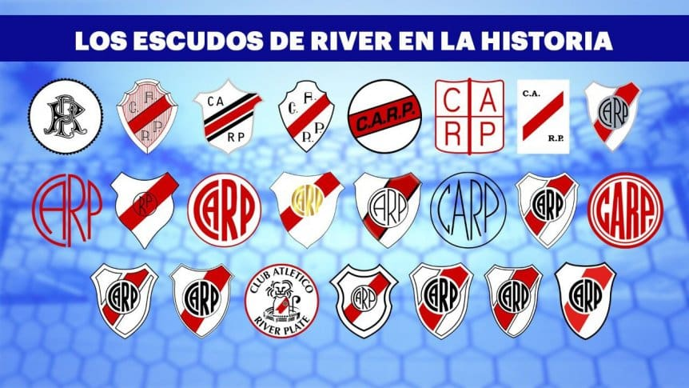

El escudo de River Plate y su evolución
Hacia los años 20 se empezaron a diseñar otro tipo de distintivos y, en la portada de la Memoria y Balance de 1918, apareció el primer monograma con las siglas “R.P.” que se imprimió en algunos documentos oficiales de aquellos tiempos. Durante toda la década siguiente, convivieron diferentes emblemas en medallas, revistas sociales, papelería e incluso en la indumentaria de entrenadores y masajistas.
Fue en 1932 cuando el Club conformó una comisión especial para establecer el denominado “distintivo oficial” y, finalmente, fue seleccionada la obra del señor Ángel R. Guzmán, a quien sin dudas se lo puede considerar el autor de nuestro mundialmente conocido escudo que a partir de ese momento estuvo presente en toda la documentación oficial de River. Un año más tarde, el famoso “CARP” con formato circular empezó a lucirse en las camisas de juego, lo que, con algunas variantes, se pudo observar hasta mediados de la década del 40. Sin embargo, el escudo completo raras veces pudo verse en las casacas de los futbolistas, aunque sí estaba presente muchas veces en la vestimenta de deportistas de otras disciplinas.
Tanto en la papelería oficial, carnets sociales, indumentarias deportivas y en publicaciones institucionales que el Club hacía en diversos medios, pudieron encontrarse muchas variantes de diseños del escudo riverplatense. Diferentes proveedores o imprentas y dibujantes hicieron que existieran infinidad de variantes de nuestro distintivo, fundamentalmente en productos no oficiales. Únicamente en las Memorias y Balances se utilizó siempre un mismo escudo durante muchos años.
En 1984, River convocó a un concurso para establecer un isotipo comercial que diera una nueva imagen al Club. El elegido fue el famoso “leoncito” diseñado por el prestigioso dibujante Carlos Loiseau, conocido como Caloi. Si bien se utilizó tanto en los documentos oficiales como en la indumentaria y fue la imagen del Club durante casi un lustro, este isotipo no reemplazó al escudo, sino que ambos símbolos convivieron.
Ya incorporado desde 1993 permanentemente en las camisetas de juego, el escudo sufrió diversas variantes hasta que ya en la segunda década de este siglo se institucionalizó el diseño y se realizaron variados manuales de marca, el último de ellos en 2014.
Hoy, el blanco, la banda roja y el CARP encuentran su mejor expresión en una nueva identidad que honra la esencia de nuestra historia.
